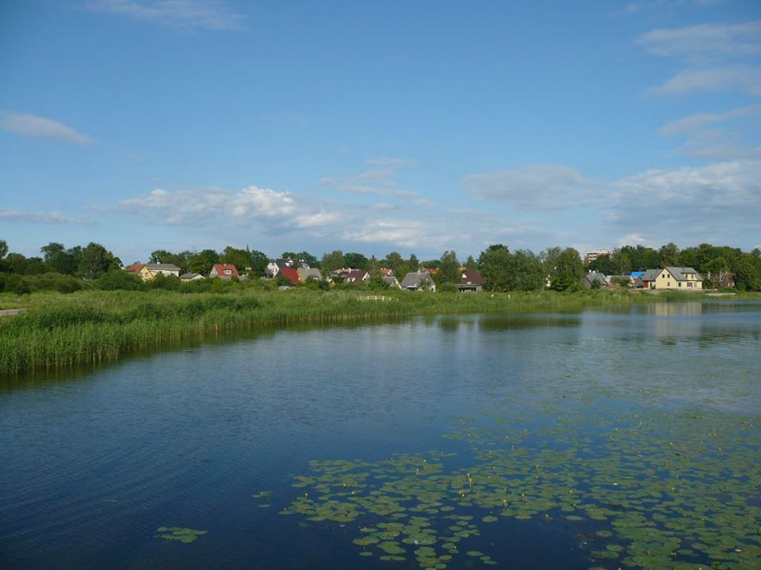

We are now officially in the season of Autumn, otherwise known as Fall
Posted by Matt Christman
Tuesday, September 21, was the official first day of Fall, the Autumn Equinox
Items on this page are nested within 'main', 'div', 'p', 'em', 'ul' and 'li' tags
This is my paragraph inside a section within a division,
within a body of HTML in a document. . Background color is blueviolet, but resembles lilac,
a favorite flower of mine.
Learn more about the lilac at this link Lilac (Syringa Vulgaris)
Posted by Matt Christman
Tuesday, September 21, was the official first day of Fall, the Autumn Equinox
|  |
Back to My Homepage